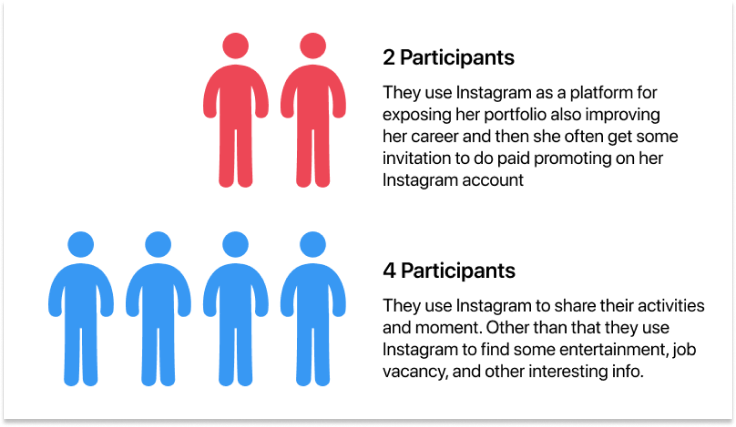
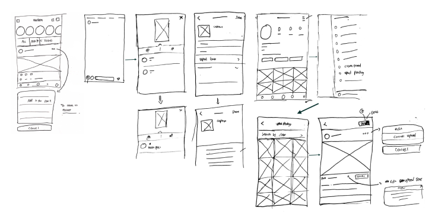

User Scenario

I asked my friends to tried to tap the
username that is mentioned on someone’s Instagram Story and I asked them to checked
the content of their timeline. The result is
Users can’t
always tap the username. The thing that happened was they are moved to
the next or previous story. One participant also got a problem because she uses a
5inc smartphone.
Contents of their
timeline mostly aren’t from their friends, but from an artist, influencer
or online shop that they have followed. Even post has been uploaded 2 days ago is
still in their timeline.
Define
After did some Observes,
surprisingly, I got a new interesting problem that has to be solved
 Pain Points #1: It’s so hard to tap usernames that are mentioned in Instagram Story.
Pain Points #2: The Instagram timeline is sorted by popularity.
This is a new problem that I got when I did an interview.
Pain Points #3: Forget to upload photo or video
Pain Points #1: It’s so hard to tap usernames that are mentioned in Instagram Story.
Pain Points #2: The Instagram timeline is sorted by popularity.
This is a new problem that I got when I did an interview.
Pain Points #3: Forget to upload photo or video
Ideate
Before I made Hi-Fi User
Interface, I decided to sketch the design on paper first to minimize material and
feature are forgotten. This method makes me faster and more effective to find a
solution, and also speeds up when making Hi-Fi versions.

Prototype
High Fidelity
Flow #1: An easier way to tap the username/hashtag that is mentioned on Instagram Story.